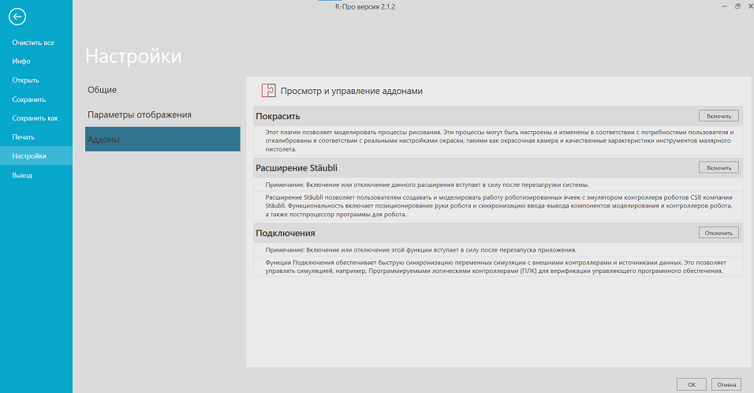

Включение функции Подключения |
|
Функцию Подключения можно включать и выключать с помощью параметра в настройках. 1.Нажмите на вкладку Файл, а затем на панели нажмите Настройки. 2.Нажмите Аддоны, а затем в Подключения, сделайте одно из следующих действий: ·Чтобы включить функцию, нажмите Включить. ·Чтобы отключить функцию, нажмите Выключить.  3.Нажмите ОК. 4.Перезапустите Рациональное Производство.
|